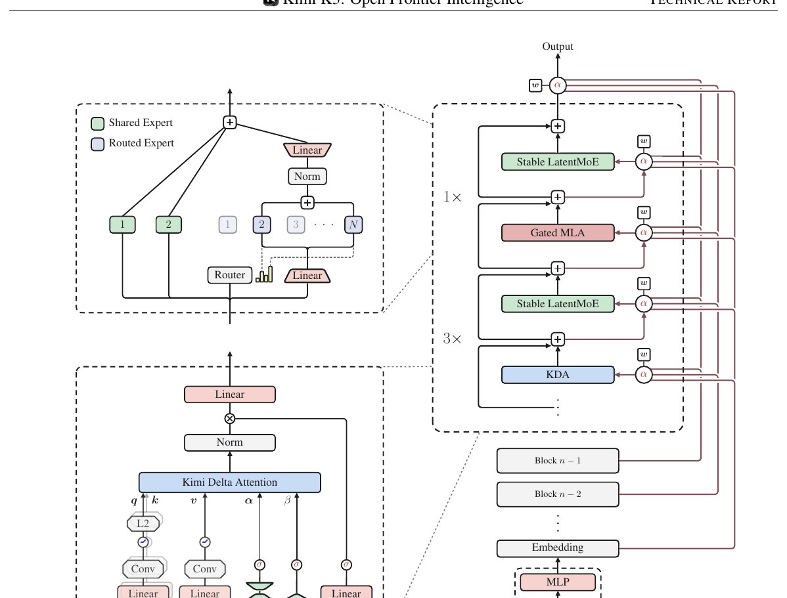
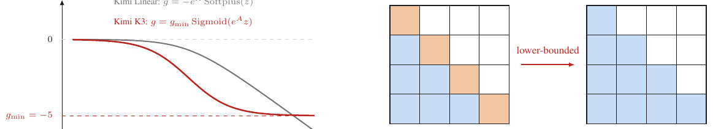
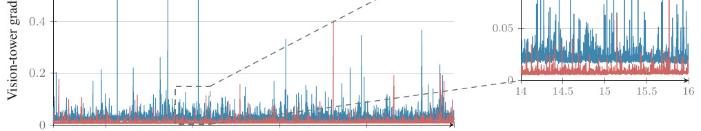
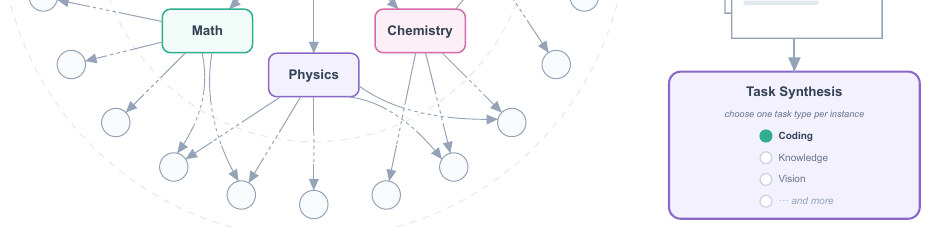
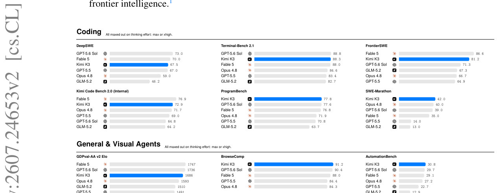

速览
五条要点
开源底座直接上 3T 级，约为 K2 的 2.7 倍
总参 1.04T → 2.78T（+167%），激活 32.6B → 104.2B（+220%），层数 61 → 93表 1（2.78 / 1.04 ≈ 2.7推算）。作者的理由：开源在 test-time scaling 上进步快，预训练规模却停在 1T 级附近，两条轴要一起推§1。
三个方向同时改：序列、深度、宽度
序列：KDA 线性注意力 + 每 4 层一层 NoPE Gated MLA；深度：AttnRes 让每层对之前的块输出做 softmax 选择；宽度：LatentMoE 在 3584 维 latent 里跑 896 个专家，加 RMSNorm、SiTU-GLU（输出上界 100）和 Quantile Balancing 稳住§2.1–2.3。
视觉塔不再从 SigLIP 初始化
SigLIP 初始化的 MoonViT-3D 联合训练时梯度范数持续偏高、频繁尖峰；从零 next-token 训练的 MoonViT-V2 稳定，作者称视觉评测与基线「持平」——但这句话没给数字§2.4 · 图 6。
RL：9 个专家 → 多教师 on-policy 蒸馏
通用 / 通用 Agent / 编码 Agent 三域各训 low、high、max 三档，靠「超预算奖励置 −1」的 τ 退火得到不同档位；最后按 (域, 档位) 选老师做逐 token 截断 log 比奖励的 MOPD§4.1.2–4.1.3 · 式 15。
成绩接近但没超过最强闭源；数据量几乎全没给
DeepSWE 67.5 vs GPT-5.6 Sol 73.0、HLE-Full 带工具 56.0 vs Fable 5 63.0；SWE-Marathon 42.0、BrowseComp 91.2 表内第一表 2。预训练 token 总量、配比、SFT 条数、RL 步数均原文未披露，见 §09。
架构：token / channel / layer 三向混合 + 原生视觉通路
图 2 是原文的架构总览。右侧主干：每块 3 层 KDA + 1 层 Gated MLA，每个注意力层后接一层 Stable LatentMoE；紫红色连线是 AttnRes。左上展开 LatentMoE，左下展开 KDA，右下是视觉通路。

| 模块 | 相对 K2 / Kimi Linear 的改动 | 原文给的证据 |
|---|---|---|
| KDA 下界衰减 | 衰减从 −eA·Softplus(z) 改为 gmin·Sigmoid(eAz)，gmin = −5：单步保留率 > e−5 ≈ 6.7×10−3，16-token tile 内累计 log 衰减落在 (−80, 0)，倒数缩放 < e80，在 BF16 范围内§2.1.1 · 式 5 | 数值推导 + 图 3：对角 tile 也能走 Tensor Core 稠密矩阵乘；没给速度数字 |
| 全秩输出门 | KDA 与 MLA 的输出门都从低秩改为输入相关的全秩投影式 6 · 式 7 | 无消融 |
| MLA → NoPE | K2 / K2.5 的 MLA 带位置编码；K3 所有 MLA 层不加位置编码，位置信息交给 KDA，扩上下文不必调 RoPE / YaRN§2.1.2 · §3.4 | 直接外推到 1M，没有单独长度外推对比 |
| FP32 注意力输出 | 为纠正 flash attention 的有偏舍入，训练时注意力输出保持 FP32，并重排 kernel 共享内存§2.1.2 | — |
| AttnRes | 标准残差把历史压成单个 hl；AttnRes 让每层用伪 query 对 embedding 与前面各块的输出做 softmax（key 先 RMSNorm）§2.2 · 式 8–10 | N ≈ 8 「回收大部分收益」引自 AttnRes 原论文 [58]，本文未单独报 |
| Stable LatentMoE | 384 → 896 路由专家，8 → 16 激活，共享专家 1 → 2，专家中间维 2,048 → 3,072；路由专家在 3584 维 latent 中计算表 1 · §2.3 | RMSNorm「稳定训练且稳定改善验证 loss 与下游」——无数字 |
| SiTU-GLU | β1 tanh(Wgx/β1) ⊙ σ(Wgx) ⊙ β2 tanh(Wux/β2)，β1 = 4、β2 = 25，逐坐标 |输出| ≤ 100；原点附近一阶等于 SwiGLU式 12 · 附录 B | 「比硬裁剪训练表现更好」——无数字 |
| Quantile Balancing | 无辅助损失路由；不再按固定步长 γ 调 bias，而是取 Top-(k+1) 得截断 α，令 bias 为 margin 的 (1 − k/n) 分位数，下一步才生效；全局分位数用直方图 + 一次 all-reduce 估计（每专家几百个 bin）§2.3.3 · 式 14 | 图 5 玩具示例（8 token、4 专家，负载 (4,3,1,0) → (2,2,2,2)）；附录 C、D 给推导与误差界 |
| Per-Head Muon | Q/K/V 动量按头切块分别做 Newton–Schulz 正交化，沿用 K2 的 weight clipping§2.5 · §3.3 | 定性：更均衡、更稳，优化器开销略降 |

3.1 原生视觉通路
- 同一 backbone、同一上下文处理文本、图像、视频，没有事后对齐阶段；代码和它渲染出的截图 / 视频帧在同一 token 流里，模型可以写代码 → 看结果 → 再改§2.4。
- MoonViT-V2 结构：27 层 ViT、约 0.4B，RMSNorm，线性与注意力投影全部去掉 bias（作者称进一步稳住从零训练）；图像与视频完全共享参数，注意力分解为帧内空间 + 帧间时间两遍，再做时间池化；投影前 pixel-shuffle 2×2 下采样，视觉 token 降为 1/4，使 3584 × 3584 的输入在 1M 上下文内可承受§2.4。按 patch 14 算，一张 3584² 图约 16,384 个视觉 token推算（未计入可能的特殊 token）。
- 为什么不用 SigLIP 初始化：主要是训练稳定性；其次 next-token 目标让编码器表示直接受语言建模塑形，而对比损失「偏全局语义、轻细粒度文本与结构线索」§2.4。

表 1 全量：K2 vs K3 架构对照 表 1
| 项 | Kimi K2 | Kimi K3 | 变化 |
|---|---|---|---|
| 层数 | 61 | 93 | ↑ 52% |
| 总参 | 1.04T | 2.78T | ↑ 167% |
| 激活参数 | 32.6B | 104.2B | ↑ 220% |
| Hidden | 7,168 | 7,168 | = |
| Latent MoE 维 | – | 3584（0.5×） | – |
| 每专家 MoE 中间维 | 2,048 | 3,072 | ↑ 50% |
| 路由专家 | 384 | 896 | ↑ 133% |
| 每 token 激活专家 | 8 | 16 | ↑ 100% |
| 共享专家 | 1 | 2 | ↑ 100% |
| 注意力头 | 64 | 96 | ↑ 50% |
| Dense 层数 | 1 | 1 | = |
| 词表 | 160K | 160K | = |
| 训练上下文 | 128K | 1M | 8× |
| 注意力 | MLA | Hybrid KDA–MLA | – |
| 激活函数 | SwiGLU | SiTU-GLU | – |
| 注意力层构成 | 61 MLA | 69 KDA + 24 MLA | – |
| MTP 层 | 1 | 1 | = |
| ViT 参数 / 层数 / patch / 头数 | – | 401M / 27 / 14 / 12 | – |
数据：管线沿用 K2 / K2.5，新增量在程序化多模态与长程环境
预训练数据一节很短（§3.1 两段），大部分「数据」信息其实在长上下文数据（§3.4）、SFT（§4.1.1）和 RL 任务合成（§4.2）里。没有任何比例或 token 数，所以本节不画配比条，只列「做了什么」与「已披露规模」。
4.1 预训练语料
文本：四大域 §3.1
- Web Text、Code、Mathematics、Knowledge 四个主域。
- 每个域：规则启发式 + 分类器质量打分 + 去重。
- 域采样率由小模型消融决定（具体比例原文未披露）。
- 改写沿用 K2 配方，只用于知识与数学语料：风格 / 视角多样的 prompt、分块自回归生成、对照源文档做保真校验。
视觉：沿用 K2.5 分类体系 §3.1
- 六类：caption、图文交错文档、OCR、感知、视频、visual coding。
- 开源集合 + 自研过滤、合成、去重管线。
- 坐标监督同时给绝对坐标与 [0,1] 归一化坐标，兼顾精确定位与分辨率鲁棒。
- 除经典 caption 图像外，大幅扩充程序化多模态数据：代码片段与其渲染结果配对，格式覆盖 SVG、3D 资产、网页、游戏、CAD 图纸。
六类来自 §3.1 原文枚举；各类的量与占比原文未披露。
4.2 长上下文数据：清洗 → 上采样 → 合成
要剔除的低质内容原文点名：近重复、二进制块、截断文件、（低质）视频片段、无效的机器生成日志。作者的判断：「长度本身不带来长程能力」，合成任务是为了防止注意力退化成局部模式§3.4。
4.3 SFT 数据
- 在前几代 Kimi SFT 管线上扩充，重点补复杂 Agent 任务覆盖§4.1.1。
- 轨迹由前代 Kimi 的领域专精模型合成 → 多阶段验证 → 人在回路标注§4.1.1。条数原文未披露。
- 所有数据统一序列化为 XTML 模板：[open] / [sep] / [close] 三个保留 token 替代尖括号；think / response / tools 三个 channel；并行工具调用带 index，参数带类型（字符串原样写，不做 JSON 转义）；无法拆成类型化参数的 JSON fallback 只出现在输入侧，训练时 mask 其 loss附录 F。
- 推理档位、tool_choice、response_format 都写成一句自然语言放进上下文，而不是专用语法；一次性选项放在历史消息之后，改选项不破坏历史 KV cache附录 F · 图 16。
4.4 RL 任务合成与环境

| 环境 | 怎么造 | 奖励 / 验证 |
|---|---|---|
| 统一白盒环境 | 把 harness 拆成可组合模块（工具接口、system prompt、上下文管理、skills、memory、subagent…），可拼出 Kimi Code、Claude Code、Codex、OpenClaw、Hermes 及新组合；训练时按任务组动态换配置，防止过拟合单一工具 schema§4.2.1 | — |
| 知识图谱任务 | DAG 知识图谱由 Agent 递归扩展：每个节点派一个 Agent 多次搜索，加节点前先查重复用，边始终从粗到细，Agent 判断「足够原子」时停止；按目标分布采样节点 + 祖先上下文构造检索 query§4.2.2 | — |
| 可验证 Agent 问题 | 多步信息检索；投行、数据分析、法律等专业工作（几十到几百步）；STEM / 视觉谜题 / 图表的多步视觉推理§4.2.3 | 可验证答案；视觉推理在沙箱 Python 里反复裁剪、放大、变换图像，生成的图像作为新观测 |
| Kernel 优化 | 单算子到融合 mega-kernel，来源如 Flash Linear Attention；CUDA / Triton / CuTe DSL / Gluon / ThunderKittens / TileLang；BF16 / FP8 / FP4§4.2.4 | 超数值误差阈值 → 0；持平专家实现 = 0.5，逼近 roofline → 1；反作弊检测 CUDA graph replay、输入缓存、降精度，并持续加新规则 |
| 个人助理 | Gmail、Notion、Slack、Canvas 等 mock 应用；HR、法务、金融场景，跨多个模拟日、几十个相互依赖事件；初始工作区由 Agent 上网找材料搭建§4.2.5 | 每个事件自带判据：确定性规则或 LLM 评估器；单条 rollout 可达数千次工具调用、数百万上下文 token |
| 自主执行（AET） | 给初始状态、受约束目标、工具动作空间、执行预算和独立 verifier；无参考轨迹；例：黑盒系统复刻、量化因子发现、税务审计§4.2.6 | 按最终环境状态判，不看 Agent 自报完成；公开 verifier 给诊断反馈 + 隐藏 verifier 测留出场景；提交次数有限且带惩罚 |
| Web 开发 | 专家整理；输入从一句话到多段规格；产物含网站、游戏、3D/WebGL、可视化、SVG、全栈应用；多种 scaffold 下 rollout§4.2.7 | 确定性检查（功能测试；复刻类加结构与像素相似度）+ 内部奖励模型判（读源码或看 / 交互产物）；构建失败、运行报错或「假装实现」→ 0 |
4.5 已披露规模
| 项 | 原文给的 | 状态 |
|---|---|---|
| 预训练 token 总量 | — | 原文未披露 |
| 文本四域 / 视觉六类占比 | 「由小模型消融决定」§3.1 | 原文未披露 |
| 改写数据量与保真校验通过率 | — | 原文未披露 |
| 长上下文数据量 / 上采样倍数 | — | 原文未披露 |
| SFT 条数 | 「large-scale」§4.1.1 | 原文未披露 |
| RL 任务数 / 步数 | — | 原文未披露 |
| 沙箱 | 51,219,741 个沙箱、1,505,678 个镜像（训练 + 评测合计）§5.3.2 | 已披露 |
| 单个 RL 实验算力 | 1M 上下文 RL 实验控制在「几百张 GPU」内§5.3.1 | 量级 |
| 单图输入上限 | 3584 × 3584 像素§2.4 | 已披露 |
训练配方
预训练
- 上下文
- 8K
文本与视觉 token 交错在同一 next-token 目标里，从第一步就联合训练§3.3
预训练后段
- 上下文
- 64K
「后续训练阶段」扩到 64K§3.3 · §3.4
Cooldown
- 上下文
- 256K
长文档 / 视频上采样 + 合成长程任务§3.4
Cooldown
- 上下文
- 1M
NoPE，无需改位置编码；长序列靠 KDA Context Parallelism§3.4 · §5.1.2
优化器 Per-Head Muon + K2 的 weight clipping；MoE 负载用 QB；cosine 学习率、1% 线性 warm-up、weight decay 0.1§3.3。scaling law 研究重调了 batch size、学习率、TPP 和模型形状，但具体取值都没给；各自独立搜索超参后 cosine 的最终 loss 一直低于 WSD§3.2。各阶段 token 数原文未披露。
SFT（冷启动）
- 前代专精模型合成轨迹 + 多阶段验证 + 人工标注
- XTML 模板
- 从 SFT 起做 QAT：专家权重 MXFP4、激活 MXFP8§4.1.1
3 域 × 3 档 = 9 个专家
- partial rollout：完成比例达 λ 即暂停，未完成的下轮优先续跑；逐 token 正则容忍陈旧数据§4.1.2
- 档位：按冷启动模型估每题预算 b0，超过 τ·b0 奖励置 −1；先大 τ 训 max，再退火得 high / low
多教师 On-Policy 蒸馏
- 按 (域 d, 档位 e) 选对应老师
- 逐 token 奖励 = clip(sg(log πteacher − log πθ), −Rmax, Rmax)式 15
- 试过更细的 top-k 蒸馏，收敛速度和最终性能「无明显优势」§4.1.3
非可验证任务：Agentic GRM §4.1.2
- 沿用 K2.5 的锦标赛式分组奖励（两两比较）。
- 判官强制流程：① 读产出 → ② 生成 rubric → ③ 按 rubric 给每个候选打分 → ④ 记入 scorepad。
- 防啰嗦：冷启动模型估长度 ℓ0，候选超过 σ·ℓ0 直接判负。
部署感知后训练 §4.1.4
- MoE 专家权重 MXFP4 / 激活 MXFP8；注意力投影、latent 投影、共享专家、路由器保持高精度；SFT 与 RL 全程 QAT，rollout 与训练同一量化方案。
- MTP 层微调成 EAGLE-3 式 draft：冻结主模型，训练时展开 7 步，融合第 1、第 4 与最后一个 AttnRes 块的特征（WE3 初始化为 [0 0 I]），直接优化接受率的 LK loss。
5.1 已披露 / 未披露超参
| 阶段 | 已披露 | 未披露 |
|---|---|---|
| 预训练 | cosine、1% warm-up、WD 0.1；8K → 64K；Per-Head Muon + weight clipping§3.3 | 峰值 LR、batch size、TPP、总 token、步数 |
| 架构超参 | gmin = −5、Ah 初始 0；β1 = 4、β2 = 25；Ns = 2；AttnRes 8 块 × 12 层§2 | KDA 头数 / 头维、chunk 大小、QB 直方图 bin 数（只说「几百」） |
| 长上下文 | 256K → 1M 在 cooldown§3.4 | 各段 token 数、上采样倍数 |
| RL | 档位 {low, high, max}；奖励超预算置 −1§4.1.2 | λ、N、K、τ、σ、学习率、步数 |
| MOPD | 式 15 形式§4.1.3 | Rmax、各域 / 档位采样比例 |
| Draft | 展开 7 步、LK loss、温度 1、无 CE 辅助项§4.1.4 | 接受率 / 加速比 |
| 评测采样 | temperature 1.0；单步任务 top-p 0.95，Agent 任务 top-p 1.0§6.1.3 | — |
基础设施要点：KDA kernel、MoonEP、1M RL、AgentENV、在线服务 §5
- KDA kernel：FlashKDA（CUTLASS）让块内计算与跨块状态传播重叠；单卡内按 SM 做 context parallel 处理超长 prefill；跨卡 KCP 把每段拆成「累计转移矩阵 + 从零起算的局部状态」两份，一次固定大小 all-gather + prefix scan 恢复入口状态§5.1 · 式 17。
- MoonEP：每个 rank 恰好收 S × K 个 token；证明每 rank 至多 E/R 个冗余专家即可完美均衡且该界基本紧（附录 E）；GPU 规划 kernel 近似 ILP 最优；通信缓冲从 DeepEP 最坏情况的 S×K×R 降为固定 S×K；形状静态，省掉逐层 host 同步§5.2.1。
- 显存：统一激活管理（重算 / 量化 / 卸载可按张量组合），多数激活块级 FP8 + 卸载；PP rank 间远程卸载（Mooncake）；Pipeline ZeRO-2 梯度分片并放 CPU；Muon 正交化用 P2P 只取自己拥有的参数分片§5.2.2。
- 视觉编码器：大图按 patch 维切到多卡做 gather-KV 注意力；ViT 前反向尽量塞进 PP bubble§5.2.3。
- 1M Agent RL：co-located 训练；空闲前缀 write-back 到 CPU DRAM 外部 KV 池，KDA 状态与 MLA KV 一起卸载 / 预取；训练状态在 rollout 时卸到 NVMe；按活跃请求数、排队数、KV 占用自动限流；reference 模型权重借用梯度缓冲显存§5.3.1。
- AgentENV：Firecracker microVM；增量 checkpoint / resume 低至 133 ms / 49 ms；等待推理时暂停（可占沙箱生命周期的 98%）不占资源；fork 用于无副作用的奖励判定；内存超售最高 6.5ק5.3.2。
- 服务：KDA 状态与 MLA KV 共用分页池；前缀哈希细到 512 token、物理块 1024–6144 token，KDA checkpoint 只存在哈希端点；MTP 投机解码只缓存 draft token 的投影输入、片上重建状态；典型编码请求前缀 400K、增量 4K，按缓存亲和路由到集群，一致性哈希配主 / 备两集群；按请求类别分配预算的准入控制§5.4。
评测
对比对象：闭源 Claude Fable 5（含 fallback）、GPT-5.6 Sol（含潜在 cyberguard）、Claude Opus 4.8、GPT-5.5（xhigh）；开源 GLM-5.2。除 GPT-5.5 外都用最高推理档§6.1.2。Kimi K3 一律 max、temperature 1.0§6.1.3。

6.1 主表（表 2 精选）
| 基准 | Kimi K3 | Claude Fable 5 | GPT-5.6 Sol | Claude Opus 4.8 | GPT-5.5 | GLM-5.2 |
|---|---|---|---|---|---|---|
| Reasoning & Knowledge | ||||||
| GPQA Diamond | 93.5 | 92.6 | 94.1 | 91.0 | 93.5 | 91.2 |
| CritPt | 23.4 | 28.6 | 32.3 | 20.9 | 27.1 | 20.9 |
| HLE-Full | 43.5 / 56.0 | 53.3 / 63.0 | 44.5 / 58.0 | 49.8 / 57.9 | 41.4 / 52.2 | – |
| Coding | ||||||
| DeepSWE | 67.5 | 70.0 | 73.0 | 59.0 | 67.0 | 46.2 |
| ProgramBench | 77.8 | 76.8 | 77.6 | 71.9 | 70.8 | 63.7 |
| Terminal-Bench 2.1 | 88.3 | 88.0 | 88.8 | 84.6 | 83.4 | 82.7 |
| FrontierSWE | 81.2 | 86.6 | 71.3 | 66.7 | 64.9 | 67.3 |
| SWE-Marathon | 42.0 | 35.0 | 39.0 | 40.0 | 14.0 | 13.0 |
| Agentic | ||||||
| BrowseComp | 91.2 | 88.0 | 90.4 | 84.3 | 84.4 | – |
| GDPval-AA v2 (Elo) | 1,686 | 1,747 | 1,736 | 1,593 | 1,491 | 1,510 |
| MCPMark-Verified | 94.5 | 87.4 | 92.9 | 76.4 | 92.9 | – |
| AutomationBench | 30.8 | 29.1 | 29.7 | 27.2 | 22.7 | 12.9 |
| Agents’ Last Exam | 28.3 | 25.7† | 29.6 | 27.0 | 26.6 | 20.4 |
| OSWorld-Verified | 84.8 | 85.0 | 83.0 | 83.4 | 79.0 | – |
| OSWorld 2.0 | 58.3 | 66.1 | 62.6 | 55.7 | 49.5 | – |
| Vision | ||||||
| WorldVQA ForceAnswer | 51.0 | 56.7 | 41.8 | 39.1 | 38.5 | – |
| OmniDocBench | 91.1 | 89.8 | 85.8 | 87.9 | 89.4 | – |
| MMMU-Pro | 81.6 / 83.4 | 81.2 / 86.5 | 83.0 / 84.6 | 78.9 / 82.7 | 81.2 / 83.2 | – |
| CharXiv (RQ) | 84.8 / 91.3 | 88.9 / 93.5 | 84.6 / 89.1 | 80.5 / 89.9 | 84.1 / 89.0 | – |
| ZeroBench-main (pass@5) | 23.0 / 41.0 | 23.0 / 46.0 | 17.0 / 35.0 | 17.0 / 34.0 | 22.0 / 41.0 | – |
「a / b」= 不带 / 带工具（HLE-Full 为通用工具，视觉基准为 Python），各自加粗最高。† Agents’ Last Exam 官方榜上 Claude Fable 5 跑在 xhigh，且 40% 任务标注为 downgraded。– 原表未报。BrowseComp 用 300K 触发的上下文压缩；不做上下文管理、直接用满 1M 时 Kimi K3 为 90.4。SWE-Marathon 用 H20 重新校准的分支（2026-07-09），Claude Fable 5 在 35% 任务上触发 fallback。PostTrainBench 在 H20 上跑三次平均（官方为 H100）。WorldVQA 因各模型普遍拒答，用 prompt 强制作答。GDPval-AA v2、AA-Briefcase、τ³-Banking、Harvey Lab-AA、APEX-Agents、SciCode、AA-LCR、CritPt 引自 Artificial Analysis（2026-07-23）表 2 · §6.1.3。
表 2 全量（43 项） 表 2
| 基准 | Kimi K3 | Claude Fable 5 | GPT-5.6 Sol | Claude Opus 4.8 | GPT-5.5 | GLM-5.2 |
|---|---|---|---|---|---|---|
| Reasoning & Knowledge | ||||||
| GPQA Diamond | 93.5 | 92.6 | 94.1 | 91.0 | 93.5 | 91.2 |
| CritPt | 23.4 | 28.6 | 32.3 | 20.9 | 27.1 | 20.9 |
| AA-LCR | 74.7 | 70.0 | 73.7 | 67.7 | 74.3 | 71.3 |
| HLE-Full | 43.5 / 56.0 | 53.3 / 63.0 | 44.5 / 58.0 | 49.8 / 57.9 | 41.4 / 52.2 | – |
| Coding | ||||||
| DeepSWE | 67.5 | 70.0 | 73.0 | 59.0 | 67.0 | 46.2 |
| ProgramBench | 77.8 | 76.8 | 77.6 | 71.9 | 70.8 | 63.7 |
| Terminal-Bench 2.1 | 88.3 | 88.0 | 88.8 | 84.6 | 83.4 | 82.7 |
| FrontierSWE | 81.2 | 86.6 | 71.3 | 66.7 | 64.9 | 67.3 |
| SWE-Marathon | 42.0 | 35.0 | 39.0 | 40.0 | 14.0 | 13.0 |
| PostTrainBench | 36.6 | 41.4 | 34.6 | 34.1 | 28.4 | 34.3 |
| MLS-Bench-Lite | 48.3 | 49.9 | 46.2 | 42.8 | 35.5 | 40.4 |
| SciCode | 58.7 | 60.2 | 56.1 | 53.5 | 56.1 | 50.5 |
| Agentic | ||||||
| BrowseComp | 91.2 | 88.0 | 90.4 | 84.3 | 84.4 | – |
| DeepSearchQA (F1) | 95.0 | 94.2 | – | 93.1 | – | – |
| ResearchRubrics | 76.2 | – | 73.8 | 73.5 | 64.0 | 71.1 |
| GDPval-AA v2 (Elo) | 1,686 | 1,747 | 1,736 | 1,593 | 1,491 | 1,510 |
| Toolathlon-Verified | 76.5 | 77.9 | 74.9 | 76.2 | 73.5 | 59.9 |
| MCPMark-Verified | 94.5 | 87.4 | 92.9 | 76.4 | 92.9 | – |
| MCP-Atlas | 84.2 | 84.7 | 83.6 | 83.6 | 82.8 | 82.6 |
| AutomationBench | 30.8 | 29.1 | 29.7 | 27.2 | 22.7 | 12.9 |
| JobBench | 54.3 | 57.4 | 45.4 | 48.4 | 38.3 | 43.4 |
| AA-Briefcase (Elo) | 1,548 | 1,583 | 1,495 | 1,354 | 1,158 | 1,260 |
| Agents’ Last Exam | 28.3 | 25.7† | 29.6 | 27.0 | 26.6 | 20.4 |
| APEX-Agents | 41.0 | 43.3 | 39.9 | 39.4 | 38.5 | 35.6 |
| OfficeQA Pro | 63.3 | 69.9 | 63.2 | 63.9 | 60.9 | 41.4 |
| SpreadsheetBench 2 | 34.8 | 34.7 | 32.4 | 31.6 | 29.1 | 28.1 |
| OSWorld-Verified | 84.8 | 85.0 | 83.0 | 83.4 | 79.0 | – |
| OSWorld 2.0 | 58.3 | 66.1 | 62.6 | 55.7 | 49.5 | – |
| SaaS-Bench | 60.1 | – | 61.4 | 56.1 | 43.8 | – |
| τ³-Banking | 33.4 | 26.8 | 33.0 | 27.6 | 31.3 | 26.8 |
| Harvey Lab-AA | 94.6 | 93.6 | 87.2 | 91.1 | 86.3 | 91.0 |
| CorpFin v2 | 71.6 | 71.8 | 64.4 | 66.7 | 68.4 | 66.1 |
| Finance Agent v2 | 54.4 | 56.3 | 53.8 | 53.9 | 51.8 | 49.7 |
| Legal Research Bench | 44.2 | 49.5 | 48.1 | 43.8 | 40.4 | 31.3 |
| Vision | ||||||
| WorldVQA ForceAnswer | 51.0 | 56.7 | 41.8 | 39.1 | 38.5 | – |
| OmniDocBench | 91.1 | 89.8 | 85.8 | 87.9 | 89.4 | – |
| PerceptionBench | 58.5 | 57.2 | 59.7 | 47.2 | 55.8 | – |
| Video-MME (w/ sub) | 90.0 | – | 89.5 | 86.0 | 89.3 | – |
| MMVU | 82.1 | – | 81.2 | 79.2 | 81.7 | – |
| BabyVision w/ Python | 85.7 | 90.5 | 88.9 | 81.2 | 83.6 | – |
| MMMU-Pro | 81.6 / 83.4 | 81.2 / 86.5 | 83.0 / 84.6 | 78.9 / 82.7 | 81.2 / 83.2 | – |
| CharXiv (RQ) | 84.8 / 91.3 | 88.9 / 93.5 | 84.6 / 89.1 | 80.5 / 89.9 | 84.1 / 89.0 | – |
| Math-Vision | 94.3 / 97.8 | 94.8 / 98.6 | 95.8 / 97.8 | 86.7 / 97.1 | 92.2 / 96.8 | – |
| ZeroBench-main (pass@5) | 23.0 / 41.0 | 23.0 / 46.0 | 17.0 / 35.0 | 17.0 / 34.0 | 22.0 / 41.0 | – |
6.2 读表：强项与差距
表内第一或并列第一 表 2
- 编码：ProgramBench 77.8、SWE-Marathon 42.0（比 Fable 5 高 7 分）
- Agent：BrowseComp 91.2、DeepSearchQA 95.0、ResearchRubrics 76.2、MCPMark-Verified 94.5、AutomationBench 30.8、SpreadsheetBench 2 34.8、τ³-Banking 33.4、Harvey Lab-AA 94.6
- 知识 / 视觉：AA-LCR 74.7、OmniDocBench 91.1；ZeroBench（无工具）与 Fable 5 并列 23.0
明显落后 表 2
- 研究级推理：HLE-Full 43.5 / 56.0 vs Fable 5 53.3 / 63.0；CritPt 23.4，低于 Fable 5、GPT-5.6 Sol 和 GPT-5.5（27.1）
- 编码：DeepSWE 67.5 vs 73.0；FrontierSWE 81.2 vs 86.6
- 知识工作 Elo：GDPval-AA v2 第三（1,686）
- 电脑操作：OSWorld 2.0 58.3 vs 66.1；BabyVision 85.7 vs 90.5
6.3 内部评测（表 3、表 4）
| 基准（harness） | Kimi K3 | Claude Fable 5 | GPT-5.6 Sol | Claude Opus 4.8 | GPT-5.5 | GLM-5.2 |
|---|---|---|---|---|---|---|
| Kimi Code Bench 2.0（Claude Code） | 73.7 | 76.9a | – | 71.7 | – | 64.2 |
| Kimi Code Bench 2.0（Kimi Code / Codex） | 72.9 | – | 64.8b | – | 66.0 / 69.0c | – |
| Coding Experience（Claude Code） | 59.9 | 59.8 | 59.3（Codex） | 58.0 | 56.8（Codex） | 53.3 |
| Swarm Bench | 76.3 | – | 73.2 | 72.6 | 61.8 | 58.5 |
| Deep Research Bench | 90.0 | – | 85.3 | 87.2 | 81.9 | 84.0 |
| MIRA Bench | 64.1 | 72.9 | 62.2 | 59.8 | 54.6 | – |
| Agentic Vision Bench | 78.3 | 81.1 | 82.9 | 82.8 | 76.9 | – |
| KWV Bench（知识工作视觉） | 64.7 | 63.6 | 66.9 | 61.7 | 65.8 | – |
| Agent Behavior Bench | 65.0 | 75.5f | 76.4 | 65.7 | 70.1 | – |
| Faithfulnessg | 85.5 | – | 84.8 | 83.6 | 86.5 | 74.8 |
a 80 题中 13 次 fallback、1 次拒答；b 80 题中 10 次拒答；c 80 题中 3 次拒答；f 95 题中 6 次拒答；g 指标为 1 − 幻觉率。Fable 5「–」= 未纳入本报告。Claude 与 GLM 用 Claude Code、GPT 用 Codex，除非该基准统一指定 harness表 3 · §6.2.1。
Kimi Webdev Bench：盲评 vs Claude Opus 4.8 表 4
同为 Claude Code harness；专家在不知模型的情况下按代码质量、功能完整度、视觉保真、交互体验四维打分。
| 领域 | Win | Tie | Lose | Win − Lose |
|---|---|---|---|---|
| Games | 55.6% | 3.7% | 40.7% | +14.9% |
| 3D / WebGL / Shader | 72.7% | 13.7% | 13.6% | +59.1% |
| Website / UI Clone | 52.6% | 21.1% | 26.3% | +26.3% |
| Overall | 58.6% | 13.8% | 27.6% | +31.0% |
第三方与成本 表 5 · §6.4
- Artificial Analysis Intelligence Index v4.1：57.1，580 个模型中第 4（Fable 5 59.9、GPT-5.6 Sol 58.9）
- Vals Index 74.7%，39 个中第 2
- WebDev Arena 1,678 Elo，99 个中第 1；Text Arena 1,486，200 个中第 8；Agent Arena 9.1，37 个中第 4（均截至 2026-07-23）
- 成本：KCB 2.0 比 Fable 5 低 4.0 分、成本 38%；BrowseComp $2.03 / 任务，约为 GPT-5.6 Sol 一半；GDPval-AA v2 与 GPT-5.6 Sol 相差 50 Elo 以内、成本低 13%
网络安全评测与案例 §6.2.2 · §7
- Tier 1 漏洞发现：几十个系统里找出数百个候选，经人工复核的约 70% 属实，含 6 个项目中 16 个此前未知漏洞§6.2.2。
- Tier 2 利用开发：内部 36 题（用户态 16、Linux 内核 20，约 540 专家小时）；Kimi K3 14/36（38.9%）vs GLM-5.2 8/36（22.2%），14 题中 10 题来自用户态；Anthropic / OpenAI 模型拒答，未纳入。UK AISI + NIST CAISI 联合评估：ExploitBench 32% vs GLM-5.2 24%，任意代码执行 0/41§6.2.2。
- 案例：AttnRes kernel 283.6 ms → 114.4 ms，DSA / KDA 运行时降 55.1% / 73.6%（24 小时预算）；写出 MiniTriton 编译器；48 小时自主跑出 nano 推理芯片原型（Nangate45，100 MHz，>8,700 tokens/s RTL 仿真）；用 56 段素材剪出自己的预告片§7 · 图 14。
新在哪
KDA、AttnRes、LatentMoE、MLA、Muon、OPD 都是已有工作（含 Moonshot 自己的 Kimi Linear 与 AttnRes 论文）。下面只列本文新提出、或首次在这个规模上落地且给了可核对做法的点。
首个公开权重的 3T 级 MoE，把线性注意力混合架构做到 2.8T
69 KDA + 24 NoPE MLA、AttnRes、1M 上下文同时出现在开源权重模型里表 1 · §8。KDA 改用下界衰减（gmin = −5）让对角 tile 也走 Tensor Core，输出门改全秩§2.1.1。
Stable LatentMoE：RMSNorm + SiTU-GLU + Quantile Balancing
针对 896 选 16 的两类失稳（路由支路近四连乘导致激活爆炸、近千专家负载难均衡）分别给解法；QB 用 margin 分位数一步设定 bias，并用直方图跨 rank 估全局分位数§2.3 · 附录 B–D。
视觉塔从零 next-token 训练，放弃对比式初始化
MoonViT-V2（401M，去 bias + RMSNorm）与 LLM 从第一步联合训练§2.4 · §3.3。
按「域 × 推理档」训 9 个专家，再多教师 OPD 合一
档位靠超预算奖励置 −1 + τ 退火获得；Agentic GRM 强制「先写 rubric 再打分」，超长直接判负§4.1.2–4.1.3。
为 2.8T + 1M Agent RL 配套的系统
MoonEP（每 rank ≤ E/R 冗余专家即可完美均衡，附录 E 证明）、KDA Context Parallelism、AgentENV（microVM 增量快照 133 ms / 49 ms、fork 判奖励）、KDA 感知前缀缓存（512 token 粒度命中）§5。
对图像编辑数据 / 评测 / caption 的启示
K3 不是图像编辑模型，但它的视觉语料、改写校验、程序化渲染数据、Web 开发与 kernel 奖励、GRM 判官协议，和编辑数据构建、验收、评测是同一类问题。每条先写论文怎么做，再给一条迁移建议（不是论文内容）。
D1代码 ↔ 渲染：天然像素级对齐的数据
论文：大幅扩充程序化多模态数据，把代码与渲染结果配对，覆盖 SVG、3D 资产、网页、游戏、CAD§3.1；Web 开发 RL 对复刻类任务算结构与像素相似度§4.2.7。
迁移建议，不是论文内容：用 SVG / HTML / Blender 场景造编辑对：改一个参数（颜色、文字、物体位置、材质）重渲染，得到严格配对的 src / tgt，编辑指令由代码 diff 模板化生成，未改动区域可逐像素验证保持度。适合文字编辑、版式、几何类 op 的冷启动和评测锚点。
D2改写之后对照源头做保真校验
论文：知识与数学语料用多风格 / 多视角 prompt 分块改写，并对照源文档做保真校验§3.1。
迁移建议，不是论文内容：caption / 指令做多风格改写扩充时，加一步回校：VLM 拿原图和改写后的 caption 逐条判事实是否仍成立（数量、颜色、空间关系、文字内容），不成立的丢掉；保留每条改写的「来源 caption ID + 校验结果」字段，方便抽检。
D3视频帧感知哈希去重 + 结构校验
论文：长文档 / 长视频走精确 + 模糊去重，视频帧加感知哈希，再做启发式 + 分类器过滤和结构校验；稀缺的长样本上采样§3.4。
迁移建议，不是论文内容：编辑源图池对训练集、评测集统一跑 pHash 近重复检测，评测图与训练图跨集去重；视频抽帧编辑数据按帧哈希去掉近似帧。稀缺类别（多人、文字、透明物体）单独上采样，并在数据版本里记倍数。
D4配比用小模型消融定
论文：各域采样率由小模型消融决定；scaling law 研究重调 batch、LR、TPP 与模型形状，且 cosine 与 WSD 各自独立搜超参后再比§3.1 · §3.2。
迁移建议，不是论文内容：编辑任务配比（加物 / 删物 / 换背景 / 风格 / 文字）先在小模型上做几组扫描再放大；比较两种训练策略时各自调最优超参再比，避免用一套超参偏袒其中一方。
C1坐标同时给绝对值和 [0,1] 归一化
论文：训练中坐标监督同时用绝对坐标与 [0,1] 归一化格式，兼顾精确定位与分辨率鲁棒§3.1。
迁移建议，不是论文内容：结构化编辑 caption 里的区域（bbox / 点）两种格式都存：像素坐标绑定原始分辨率，归一化坐标在 resize、裁剪增强后仍可用。训练时随机选一种喂给模型，评测时两种都测，能发现模型是否只会某一种坐标体系。
C2结构化格式：显式边界、带类型、坏样本只在输入侧
论文：XTML 用保留 token 做结构边界、参数带类型、字符串不转义；无法类型化的 JSON fallback 只出现在输入并 mask loss；选项写成自然语言放在历史之后附录 F。
迁移建议，不是论文内容：JSON 编辑 caption（ops + preserve）里的长文本字段（要写进图里的文字、风格描述）别塞进转义字符串，单独字段原样存；格式不规整的历史数据可以作为条件输入，但不进生成目标的 loss。
C3编码器目标决定细粒度线索能否保留
论文：放弃 SigLIP 初始化的理由之一是对比损失「偏全局语义、轻细粒度文本与结构线索」；3584² 输入经 pixel-shuffle 后约 16K token§2.4推算。
迁移建议，不是论文内容：给编辑模型挑理解端编码器 / caption VLM 时，单独测文字、细线条、小物体相关的 caption 准确率，不只看整体相似度；高分辨率源图 caption 时记录实际送入的分辨率与 token 数，作为 caption 质量的协变量。
E1先过正确性门槛，再以参考实现为 0.5 锚点
论文：kernel 超误差阈值直接 0 分；持平专家实现得 0.5，逼近 roofline 趋近 1§4.2.4。
迁移建议，不是论文内容：编辑 RL 奖励分两层：指令未执行或保持区被破坏 → 0；通过后按质量与「参考编辑器输出」相对打分，持平 = 0.5，明显更好才往 1 走。这样奖励有可解释的锚点，也不会被「只保持不编辑」刷分。
E2确定性检查 + 看产物的模型判官 + 「假装完成」清零
论文：Web 开发奖励 = 功能测试 / 像素与结构相似度 + 奖励模型读源码或交互产物；构建失败、报错或伪造产物 → 0§4.2.7；AET 只看最终环境状态，不看 Agent 自报§4.2.6。
迁移建议，不是论文内容：编辑评测把非编辑区 SSIM / LPIPS 这类确定性指标和 VLM 判官合用；输出与输入几乎相同、或整图被替换时直接判 0。判官只看最终像素，不读模型自报的 mask 或说明文字。
E3维护一张持续增长的作弊清单
论文：kernel 奖励的反作弊系统惩罚 CUDA graph replay、输入缓存、降精度，开发中每发现新手法就加新规则§4.2.4；AET 用公开 verifier 给诊断 + 隐藏 verifier 测留出场景§4.2.6。
迁移建议，不是论文内容：为编辑奖励建「已知作弊」表（原图直出、全局调色冒充局部编辑、贴图式粘贴、改文字只糊掉不重写），每类配一个自动检测器；判官提示词开发用一套样本，最终评测留一套隐藏样本。
E4判官先写 rubric、逐项记分，并限制长度
论文：Agentic GRM 强制「读产出 → 生成 rubric → 逐候选按 rubric 打分 → 记 scorepad」；输出超过 σ·ℓ0 自动判负§4.1.2。
迁移建议，不是论文内容：VLM 编辑判官对每条指令先产出检查项（目标物是否改变、属性是否正确、非目标区是否保持、光影是否一致），再逐项打分并存档，便于复查分歧；做 caption RL 时，长度超过基线一定倍数直接判负，防止 caption 越写越长。
E5两种设置都报，口径写进脚注
论文：BrowseComp 同时给 300K 压缩（91.2）与满 1M 无管理（90.4）；WorldVQA 写明强制作答；MMMU-Pro 保持原始输入顺序；视觉分数三次平均、ZeroBench 五次；Webdev 盲评分四维报 Win / Tie / Lose§6.1.3 · 表 4。
迁移建议，不是论文内容：编辑评测报告固定一节「口径」：分辨率、采样次数与种子、判官模型版本、拒答 / 安全拦截怎么计；GSB 盲测按「指令遵循 / 保持 / 画质 / 美感」分维报 Win / Tie / Lose，而不是只给一个总胜率。
局限与存疑
- 数据量与配比几乎全空白。预训练 token 总量、文本四域 / 视觉六类占比、改写数据量、长上下文数据量、SFT 条数、RL 任务数与步数都没有§3.1 · §3.4 · §4。
- 「2.5×」是合计数，单项无消融。KDA 下界衰减、全秩门、AttnRes、RMSNorm、SiTU-GLU、QB、Per-Head Muon、数据配方的各自贡献都没拆；「RMSNorm 稳定改善验证 loss」「SiTU 比硬裁剪好」「cosine 优于 WSD」「top-k 蒸馏无明显优势」均无数字§2 · §3.2 · §4.1.3。
- 视觉塔结论证据偏薄。「MoonViT-V2 在各项视觉评测上与 SigLIP 初始化基线持平」只有一句话；图 6 只给梯度范数，消融的模型规模、token 数、评测项均未给§2.4 · 图 6。
- 「consistently outperforms」说得过满。正文称 K3 全面超过 Opus 4.8、GPT-5.5、GLM-5.2§6.1.4，但表 2 中 CritPt GPT-5.5 27.1 > 23.4、OfficeQA Pro Opus 4.8 63.9 > 63.3；表 3 中 Agentic Vision Bench Opus 4.8 82.8 > 78.3、KWV Bench GPT-5.5 65.8 > 64.7、Faithfulness GPT-5.5 86.5 > 85.5、24/7 ClawBench 2.0 GPT-5.5 48.5 > 48.3。
- 对比条件不齐。Fable 5 含 fallback（SWE-Marathon 35% 任务、KCB 2.0 80 题中 13 次）；GPT-5.6 Sol 含 cyberguard 与拒答；SWE-Marathon 用 H20 重校准分支，PostTrainBench 用 H20 而非 H100；Terminal-Bench 2.1 取各 harness 最佳；BrowseComp 用 300K 压缩§6.1.2–6.1.3 · 表 3。
- 内部集的「领先」常缺最强对手。Swarm Bench、Deep Research Bench、KAET、CLIF Bench 上 Fable 5 都是「–」（未纳入）；这些集本身不可复现，且「频繁刷新」表 3 · §6.2.1。
- 图 1 混用 harness。Kimi Code Bench 2.0 一栏 K3 取 Kimi Code 的 72.9、Fable 5 取 Claude Code 的 76.9，GPT-5.6 Sol 64.8 含 80 题中 10 次拒答图 1 · 表 3；成本对比的「低 4.0 分」也是按这组数算。
- 图 2 与 §2.2 的「块」不是同一口径。图 2 把 3 KDA + 1 MLA 画成一块，AttnRes 连线指向「Block n−1 / n−2」；§2.2 却说 AttnRes 按 12 层一块分 8 块。图里的 Block 指哪种，原文未说明。
- 图中出现基线外的模型。图 13 的 BrowseComp 子图出现 Claude Mythos 5，BrowseComp / GDPval-AA v2 / AA-Briefcase 子图出现 Claude Sonnet 5，但 §6.1.2 的基线里没有它们，口径未交代。
- 小处措辞。图 14 纵轴写「Speedup vs. FLA Triton Baseline (%)」，K3 的 +59.7% 与正文 283.6 → 114.4 ms 的延迟降幅一致（1 − 114.4/283.6 ≈ 59.7%）推算，按加速比算应约 2.5×。
- 安全评测只与 GLM-5.2 比。Anthropic / OpenAI 模型拒答，Tier 2 无法与最强闭源对照；作者也说结果是能力下界§6.2.2。
- 许可证未写。正文只说「release the full model weights」并给 Hugging Face 链接，许可证条款原文未披露。
图表索引
| 编号 | 内容 | 本页位置 |
|---|---|---|
| 图 1 | 主结果柱状图（figures/fig0-teaser.jpg，p.1 局部，缺底部三项） | §06 |
| 图 2 | 架构总览：token / channel / layer 混合 + MoonViT-V2（figures/fig2.jpg，p.3） | §03 |
| 图 3 | KDA 下界衰减与对角 tile 计算（figures/fig3.jpg，p.5 局部） | §03 |
| 图 4–5 | GLU / SwiGLU / SiTU-GLU 响应；Quantile Balancing 示例（未裁图，文字引用） | §03 表 |
| 图 6 | 视觉塔梯度范数：SigLIP 初始化 vs 从零（figures/fig6.jpg，p.9 局部） | §03.1 |
| 图 7 | K2 / K3 scaling law，≈2.5×（未裁图，文字引用） | §01 · §05 |
| 图 8 | RL FLOPs 与分数 / 平均步数（未裁图，文字引用） | §07 |
| 图 9 | 知识图谱引导的任务合成（figures/fig9.jpg，p.15 局部） | §04.4 |
| 图 10–12 | 黑盒系统复刻完成曲线；PP 阶段计算 / 通信重叠；细粒度前缀缓存（未裁图） | §05 折叠 |
| 图 13–15 | 分数 vs 成本；AttnRes kernel 优化；MiniTriton（未裁图） | §06 · §09 |
| 图 16 | XTML 聊天模板结构（未裁图，文字引用） | §04.3 |
| 表 1 | K2 vs K3 架构对照 | §03 折叠 |
| 表 2 | 公开基准主表（精选 + 全量） | §06.1 |
| 表 3–4 | 内部基准；Kimi Webdev Bench 盲评 | §06.3 |
| 表 5 | 第三方评测 | §06.3 |
| 示意图 | 主干配置示意（本页据图 2 / 表 1 绘制）；六张柱状图（本页据表 2 绘制，横轴从 0 起） | §03 · §06.1 |